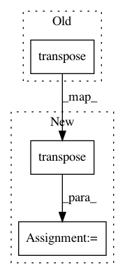

48c1c96ac4cfec5580a5feb7eb7ef7c25c6db234,keras/backend/tensorflow_backend.py,,ctc_label_dense_to_sparse,#,4257
Before Change
batch_array = tf.transpose(tf.reshape(tf.tile(tf.range(label_shape[0]),
max_num_labels_tns), reverse(label_shape, 0)))
batch_ind = tf.boolean_mask(batch_array, dense_mask)
indices = tf.transpose(tf.reshape(concatenate([batch_ind, label_ind], axis=0), [2, -1]))
vals_sparse = tf.gather_nd(labels, indices)
return tf.SparseTensor(tf.to_int64(indices), vals_sparse, tf.to_int64(label_shape))
After Change
batch_ind = tf.boolean_mask(batch_array, dense_mask)
indices = concatenate([batch_ind, label_ind], axis=0)
indices = tf.transpose(tf.reshape(indices, [2, -1]))
vals_sparse = tf.gather_nd(labels, indices)
indices = tf.to_int64(indices)
label_shape = tf.to_int64(label_shape)
return tf.SparseTensor(indices, vals_sparse, label_shape)
In pattern: SUPERPATTERN
Frequency: 5
Non-data size: 3
Instances
Project Name: keras-team/keras
Commit Name: 48c1c96ac4cfec5580a5feb7eb7ef7c25c6db234
Time: 2018-10-29
Author: gabrieldemarmiesse@gmail.com
File Name: keras/backend/tensorflow_backend.py
Class Name:
Method Name: ctc_label_dense_to_sparse
Project Name: jadore801120/attention-is-all-you-need-pytorch
Commit Name: 33b341d1f8c6397b547f12ae2d5937bf5e2fd1ec
Time: 2018-08-22
Author: yhhuang@nlg.csie.ntu.edu.tw
File Name: transformer/SubLayers.py
Class Name: PositionwiseFeedForward
Method Name: forward
Project Name: matthewwithanm/django-imagekit
Commit Name: 47e087e3b4e1449379058bff0c455c5f35f9f0af
Time: 2009-06-04
Author: justin.driscoll@gmail.com
File Name: imagekit/processors.py
Class Name: Transpose
Method Name: process
Project Name: sony/nnabla-examples
Commit Name: 7d8f3f66495979f1bbd27205d422d673991709f2
Time: 2021-01-26
Author: Krishna.Wadhwani@sony.com
File Name: GANs/stylegan2-distillation/train.py
Class Name: Trainer
Method Name: train
Project Name: DenisTome/Lifting-from-the-Deep-release
Commit Name: 5648ee1938dcb9e531d11a02262901f104216759
Time: 2017-05-12
Author: D.Tome@cs.ucl.ac.uk
File Name: utils/prob_model.py
Class Name: Prob3dPose
Method Name: normalise_data